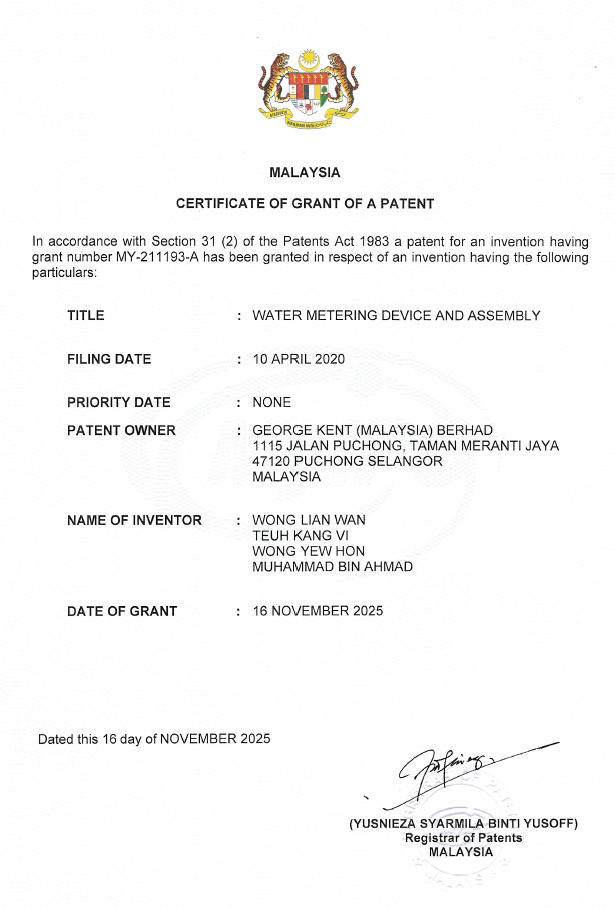

This page highlights intellectual property contributions related to smart metering and utility technologies.

Patent Number: MY-211193-A
Named Inventor: WONG YEW HON
The patent lists the inventor as WONG YEW HON, the legal name of Vincent Wong.
This patent relates to innovations in water metering technology and reflects contributions to the development of utility metering solutions.